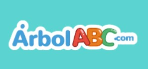
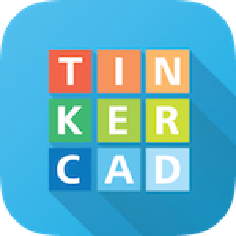

Recursos Educativos Digitales
Herramientas validadas por nuestro equipo docente
Khan Academy
Plataforma gratuita con ejercicios y videos educativos.
Objetivo
Proporcionar educación gratuita de alta calidad para cualquier persona en cualquier lugar.
Beneficios
- Más de 10,000 videos y ejercicios interactivos
- Seguimiento personalizado del progreso
- Contenido alineado con planes de estudio oficiales
Público Objetivo
6 a 18 años (Primaria a Bachillerato) y docentes.
Creador
Salman Khan (2008)
Enlace
khanacademy.orgDuolingo
Aprende idiomas con lecciones gamificadas.
Objetivo
Hacer el aprendizaje de idiomas accesible y divertido mediante juegos.
Beneficios
- 30+ idiomas disponibles
- Sistema de recompensas y streaks
- Modo sin conexión
Público Objetivo
10+ años (Desde 5° Primaria hasta adultos).
Creador
Luis von Ahn (2011)
Enlace
duolingo.comLogicLike
Aprende Matematica con este herramienta.
Objetivo
Aprender matematicas de manera facil y divertido mediante juegos.
Beneficios
- Desarrollar habilidades Cognitivas
- Mejora el razonamiento Logico
- Mejora la atencion
Público Objetivo
4+ años (Desde 5° Primaria hasta adultos).
Creador
Mieke VanderBorght (2011)
Enlace
LogicLike.com
ArbolABC
Los juegos están diseñados para ser educativos y entretenidos a la vez, basados en la teoría de las inteligencias múltiples
Objetivo
Desarrollar habilidades de lógica, pensamiento crítico y resolución de problemas
Beneficios
- Ofrecer juegos y libros interactivos en diversas áreas del conocimiento
- El aprendizaje a través del juego puede reducir la ansiedad
- Fomentar la autoconfianza y aumentar la motivación
Público Objetivo
3+ años (para niños de 3 a 10 años.).
Creador
Paola Artmann (---)
Enlace
ArbolABC.comSmartick
Es un método de aprendizaje online que utiliza inteligencia artificial
Objetivo
Desarrollar habilidades de pensamiento críticoy y motivar a los estudiantes para aprender
Beneficios
- Smartick se adapta al ritmo y nivel de cada niño
- Analiza el rendimiento del niño y ajusta los ejercicios en consecuencia
- Corrige errores de inmediato y ayuda al niño a comprender mejor los conceptos
- Hábito de estudio perdurable
Público Objetivo
4+ años (para niños de 4 a 14 años)
Creador
Desconocido (---)
Enlace
Smartick.comMatific
Es un método de aprendizaje online que utiliza inteligencia artificial
Objetivo
El objetivo de Matific es cambiar la forma de aprender de un niño
Beneficios
- Retroalimentación inmediata
- Los docentes y las familias pueden acceder a informes detallados
- Alineación con el currículo escolar
- Desarrollo de habilidades de resolución de problemas
Público Objetivo
4+ años (para niños de 4 a 12 años)
Creador
Desconocido (---)
Enlace
Matific.comKokitos.com
Juegos están pensados para estimular el aprendizaje de forma lúdica y atractiva
Objetivo
Fomentar habilidades como el razonamiento lógico, la memoria y la concentración
Beneficios
- Juegos están diseñados para estimular la memoria
- Incluyen juegos para todas las edades y niveles
- Basados en la teoría de las inteligencias múltiples
- Juegos de matemáticas para aprender a contar y a sumar
Público Objetivo
2+ años (para niños, jovenes y adultos)
Creador
Rocío González (2011)
Enlace
Kokitos.comCanva
Canva es una plataforma de diseño gráfico en línea cque permite a cualquier persona realizar diseños profesionales
Objetivo
Permitir a cualquier persona crear diseños profesionales de forma fácil, rápida e intuitiva
Beneficios
- Facilidad de uso
- Gran variedad de plantillas
- Acceso desde cualquier lugar
Público Objetivo
8+ años (Para estudiantes, docentes y emprendedores)
Creador
Melanie Perkins, Cliff Obrecht y Cameron Adams (2013)
Enlace
Canva.comXmind
XMind es un software de mapas mentales diseñado para ayudar a organizar ideas
Objetivo
Permitir a organizar ideas, planificar proyectos, tomar decisiones y visualizar información de forma estructurada
Beneficios
- Fomenta la organización mental
- Ideal para lluvia de ideas y planificación
- Los mapas pueden exportarse en varios formatos como PDF, Word, PNG, Markdown, entre otros
Público Objetivo
8+ años (Para estudiantes, docentes, investigadores y analistas)
Creador
Empresa XMind Ltd(2007)
Enlace
Xmind.com
Scratch
Entorno de programación visual gratuito diseñado para que niños, jóvenes y principiantes puedan crear fácilmente sus propias historias interactivas, juegos y animaciones
Objetivo
Facilitar el aprendizaje de la programación y el pensamiento computacional a través de una plataforma intuitiva, divertida y educativa
Beneficios
- Aprendizaje intuitivo y creativo
- Fomenta el pensamiento lógico y la resolución de problemas
- Permite compartir proyectos en línea con una comunidad global
Público Objetivo
8+ años (para niños y niñas)
Creador
MIT Media Lab, liderado por Mitchel Resnick.(2007)
Enlace
Scratch.com
Tinkerad
Tinkercad es una herramienta en línea gratuita que permite diseñar modelos 3D, circuitos electrónicos y simular programación con bloques de forma sencilla y visual.
Objetivo
Facilitar el aprendizaje del diseño 3D, electrónica básica y programación a estudiantes, educadores y principiantes de todas las edades.
Beneficios
- Es gratuito y funciona desde el navegador, sin necesidad de instalación
- Su interfaz intuitiva permite aprender de forma práctica y divertida
- Permite crear desde modelos 3D hasta circuitos electrónicos con Arduino
Público Objetivo
8+ años (para estudiantes de primaria, secundaria y universitarios)
Creador
MKai Backman y Mikko Mononen.(2011)
Autodesk (2013)
Enlace
Tinkercad.comGeogebra
GeoGebra es un software interactivo de matemáticas que combina geometría, álgebra, cálculo, estadística y gráficos en una sola plataforma dinámica, ideal para la enseñanza y el aprendizaje.
Objetivo
Apoyar la enseñanza y el aprendizaje de las matemáticas mediante herramientas visuales y dinámicas que facilitan la comprensión de conceptos abstractos.
Beneficios
- Multidisciplinar: Integra varias ramas de las matemáticas en un solo entorno
- Interactivo: Permite construir y manipular objetos matemáticos en tiempo real
- Gratuito y accesible: Está disponible de forma gratuita tanto en línea como sin conexión
Público Objetivo
10+ años (para estudiantes de primaria, secundaria y universitarios)
Creador
Markus Hohenwarter (2001)
Enlace
Geogebra.comNo encontramos resultados
Prueba con otros términos o categorías